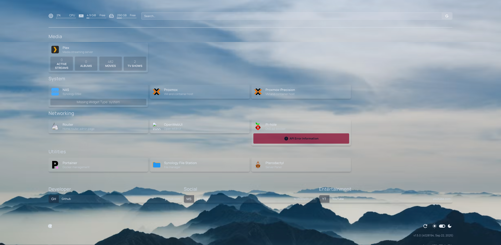

~/ Technical Projects & Systems
Library Resource Automator
Engineered an automation utility that headlessly parses a local library database to isolate and display open study room allocations, eliminating manual scheduling friction.
▶ View Application Screenshot

 Python
Playwright
Python
Playwright
Minimalist Weather Utility - SMPLWTHR
Mobile and web app used to add any location. Users can view the current weather, hourly, and weekly weather forecasts for any location, all while enjoying a simple and intuitive user experience. All weather information is brought in using OpenWeatherAPI.
▶ View Demo Video
 Flutter
Flutter
 Dart
Dart
Home Services (HomeLab)
I run my own home server, and I've been learning how to maintain it, upgrade its hardware and software, and secure it against threats for an entrance into cybersecurity. I use Proxmox to virtualize different operating systems and services, creating a small-scale cloud environment right in my media room. As well as being able to access it outside of my network using Tailscale, TwinGate, and OpenVPN. I use new and old computers. Taking advantage of old AirPort Extremes. Being able to host a file server and just a whole lot of services locally, I find interesting.
▶ View System Topology

 Proxmox
VE
NAS
Proxmox
VE
NAS
 Synology
Synology
 Docker
Twingate
Docker
Twingate
 Tailscale
Tailscale
 OpenVPN
OpenVPN
Minecraft Server Cluster
Orchestrated high-concurrency dedicated Minecraft server clusters managed through Pterodactyl Panel. Implemented extensive JVM tuning for optimal performance and minimal player latency.
▶ View Panel Screenshot

 Java
JVM Tuning
Java
JVM Tuning
 Linux
Pterodactyl
Linux
Pterodactyl